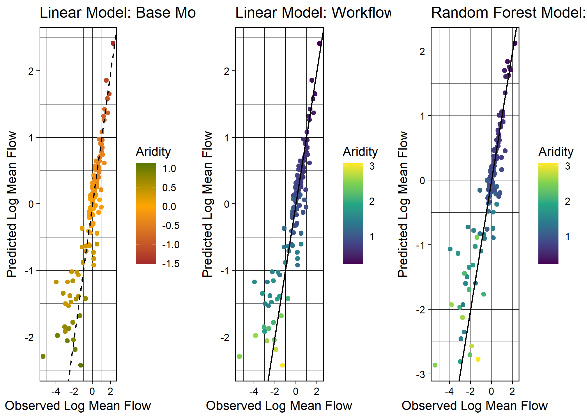
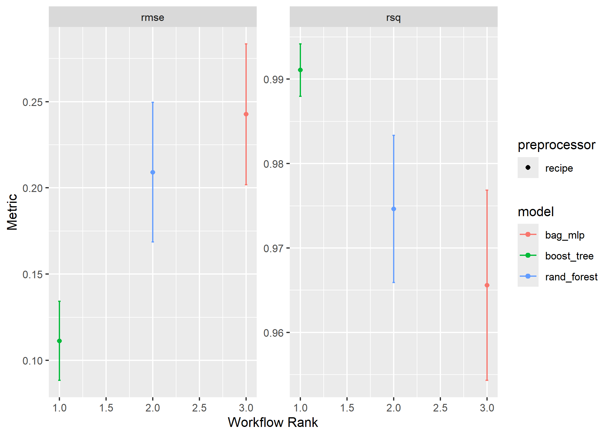
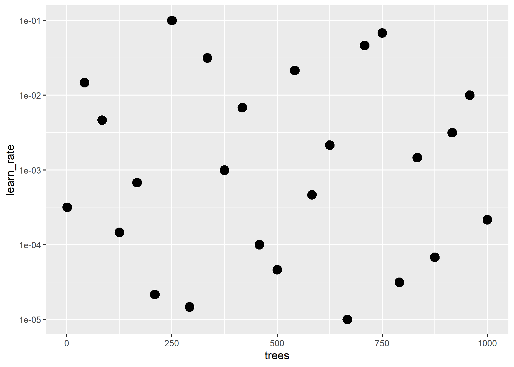
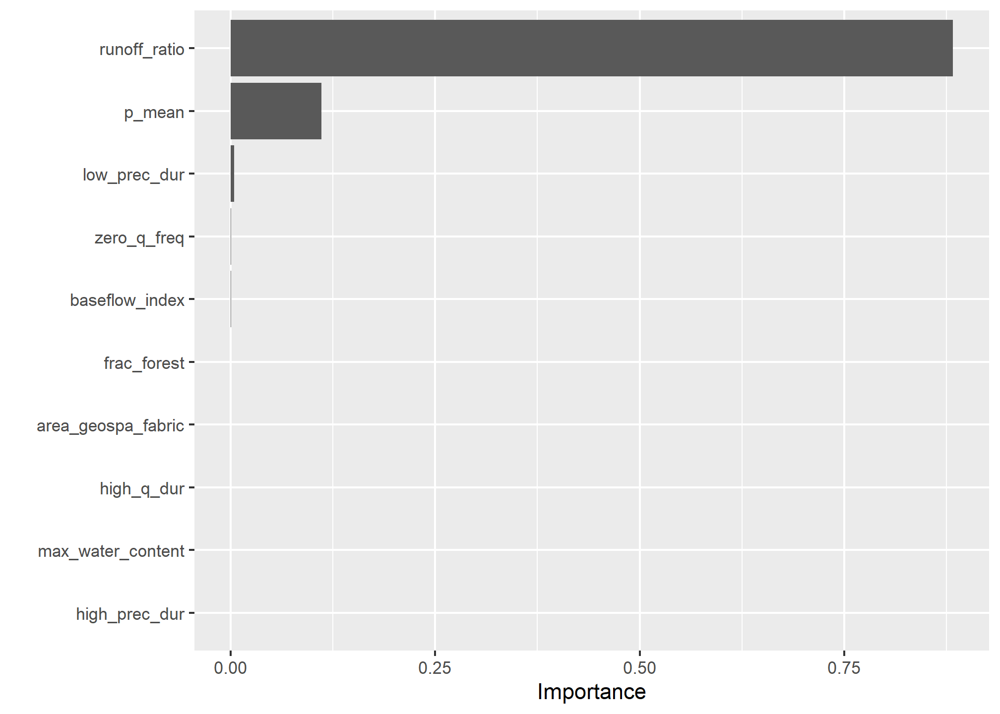
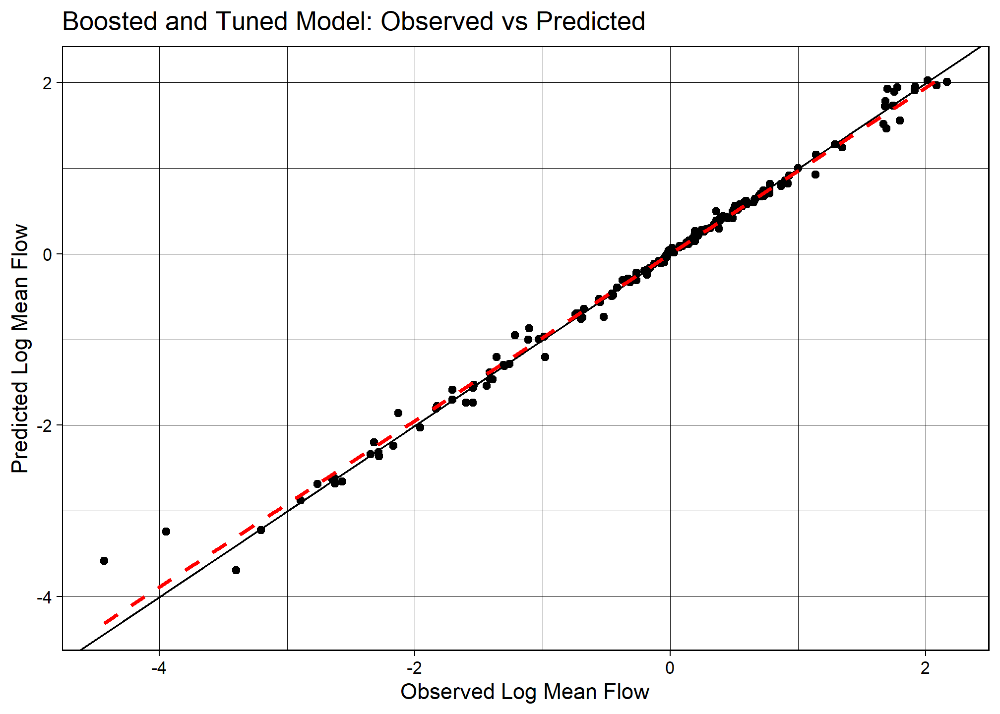

#Data Manipulation
library(tidyverse)
library(tidymodels)
library(dataRetrieval)
library(AOI)
library(powerjoin)
library(glue)
library(vip)
library(baguette)
library(ranger)
library(xgboost)
#Data Visualization
library(ggpubr)
library(gghighlight)
library(ggrepel)
library(ggthemes)
library(flextable)Lab 5: Machine Learning in Hydrology
Tidymodels & CAMELS Data
Libraries
Introduction
In this lab, I will explore predictive modeling in hydrology using the tidymodels framework and the CAMELS (Catchment Attributes and Meteorology for Large-sample Studies) dataset.
What is tidymodels?
is an R framework designed for machine learning and statistical modeling. Built on the principles of the tidyverse, tidymodels provides a consistent and modular approach to tasks like data preprocessing, model training, evaluation, and validation. By leveraging the strengths of packages such as recipes, parsnip, and yardstick, tidymodels streamlines the modeling workflow, making it easier to experiment with different models while maintaining reproducibility and interpretability.
What is the CAMELS dataset?
The CAMELS dataset is a widely used resource in hydrology and environmental science, providing data on over 500 self-draining river basins across the United States. It includes meteorological forcings, streamflow observations, and catchment attributes such as land cover, topography, and soil properties. This dataset is particularly valuable for large-sample hydrology studies, enabling researchers to develop and test models across diverse climatic and physiographic conditions.
In this lab, we will focus on predicting mean streamflow for these basins using their associated characteristics. CAMELS has been instrumental in various hydrologic and machine learning applications, including:
Calibrating Hydrologic Models – Used for parameter tuning in models like SAC-SMA, VIC, and HBV, improving regional and large-sample studies.
Training Machine Learning Models – Supports deep learning (e.g. LSTMs) and regression-based streamflow predictions, often outperforming traditional methods.
Understanding Model Behavior – Assists in assessing model generalization, uncertainty analysis, and the role of catchment attributes.
Benchmarking & Regionalization – Facilitates large-scale model comparisons and parameter transfer to ungauged basins.
Hybrid Modeling – Enhances physics-based models with machine learning for bias correction and improved hydrologic simulations.
A notable study by Kratzert et al. (2019) demonstrated that LSTMs can outperform conceptual models in streamflow prediction. As part of this lab, we will explore how to programmatically download and load the data into R.
What’s in the data?
Each record in the CAMELS dataset represents a unique river basin, identified by an outlet USGS NWIS gauge_id. The dataset contains a mix of continuous and categorical variables, including meteorological, catchment, and streamflow summaries.
The data downloaded are the basin level summaries. For example, looking at row 1 of the data (Gage: 01013500) all of the values are the areal average for the drainage basin seen below, while the flow metrics are associated with the outlet gage (in red):
# Use the `findNLDI` function to get the basin and flowlines for the first gauge
basin <- findNLDI(nwis = "01013500",
nav = "UT",
find = c("basin", "flowlines"))
# Plot the basin, flowlines, and gauge
ggplot() +
geom_sf(data = basin$basin, fill = "lightblue") +
geom_sf(data = basin$UT_flowlines, color = "blue") +
geom_sf(data = basin$origin, color = "red") +
theme_minimal()Lab Goals
- Learn how to programmatically download and access data.
- Practice using tidymodels for predictive modeling.
- Train and evaluate models to predict mean stream flow across the country.
- Interpret and compare model performance using workflows.
By the end of this lab, you will have hands-on experience applying machine learning techniques to real-world data, helping to bridge the gap between statistical modeling and environmental science.
Data Download
The CAMELS dataset is hosted by NCAR and can be accessed here under the “Individual Files” section. The root URL for all data seen on the “Individual Files” page is:
root <- 'https://gdex.ucar.edu/dataset/camels/file'Near the bottom of that page, there are many .txt files that contain the data we want. Some hold climate data for each basin, some hold geology data, some hold soil data, etc. There is also a PDF with descriptions of the columns in each file. We are going to download all of the .txt files and the PDF.
Getting the documentation PDF
Download the documentation PDF which provides a descriptions for the various columns as many are not self-explanatory. Use download.file to download the PDF to our data directory.
download.file('https://gdex.ucar.edu/dataset/camels/file/camels_attributes_v2.0.pdf', 'C:/Users/horre/Desktop/csu_523c/data05/camels_attributes_v2.0.pdf', overwrite = TRUE)
#this function produced a corrupt file, so I downloaded it manually.Getting Basin characteristics
Download the .txt files that store the actual data documented in the PDF.
- Create a vector storing the data types/file names to download:
types <- c("clim", "geol", "soil", "topo", "vege", "hydro")- Use glue to construct the needed URLs and file names for the data to download:
# Where the files live online ...
remote_files <- glue('{root}/camels_{types}.txt')
# where we want to download the data ...
local_files <- glue('data05/camels_{types}.txt')- Now we can download the data: walk2 comes from the purrr package and is used to apply a function to multiple arguments in parallel (much like map2 works over paired lists). Here, we are asking walk2 to pass the first element of remote_files and the first element of local_files to the download.file function to download the data, and setting quiet = TRUE to suppress output. The process is then iterated for the second element of each vector, and so on.
walk2(remote_files, local_files, download.file, quiet = TRUE)- Once downloaded, the data can be read it into R using readr::read_delim(), again instead of applying this to each file individually, we can use map to apply the function to each element of the local_files list.
# Read and merge data
camels <- map(local_files, read_delim, show_col_types = FALSE)- This gives us a list of data.frames, one for each file that we want to merge into a single table. So far in class we have focused on *_join functions to merge data based on a primary and foreign key relationship.
In this current list, we have >2 tables, but, have a shared column called gauge_id that we can use to merge the data. However, since we have more then a left and right hand table, we need a more robust tool. We will use the powerjoin package to merge the data into a single data frame. powerjoin is a flexible package for joining lists of data.frames. It provides a wide range of join types, including inner, left, right, full, semi, anti, and cross joins making it a versatile tool for data manipulation and analysis, and one that should feel familiar to users of dplyr.
In this case, we are join to merge every data.frame in the list (n = 6) by the shared gauge_id column. Since we want to keep all data, we want a full join.
camels <- power_full_join(camels, by = 'gauge_id')Question 1
- Make sure all data and the PDF are downloaded into your data directory
- From the documentation PDF, report what zero_q_freq represents
zero_q_freq is the frequency or how often there is no flow, q = 0 mm/day
Exploratory Data Analysis
First, lets make a map of the sites. Use the borders() ggplot function to add state boundaries to the map and initially color the points by the mean flow (q_mean) at each site.
ggplot(data = camels, aes(x = gauge_lon, y = gauge_lat)) +
borders("state", colour = "gray50") +
geom_point(aes(color = q_mean)) +
scale_color_gradient(low = "pink", high = "dodgerblue") +
ggthemes::theme_map()
Question 2
- Make 2 maps of the sites, coloring the points by the aridity and p_mean column
- Add clear labels, titles, and a color scale that makes sense for each parameter.
- Ensure these render as a single image with your choice of facet_*, patchwork, or ggpubr
aridity <- ggplot(data = camels, aes(x = gauge_lon, y = gauge_lat)) +
borders("state", colour = "gray50") +
geom_point(aes(color = aridity), size = 2) +
scale_color_gradient(low = "#012b90", high = "#d21404") +
ggthemes::theme_map() +
labs(title = 'Aridity for NWIS Gauges',
subtitle = '(PET/P)',
color = 'Aridity Index') +
theme(legend.position = 'right')
p_mean <- ggplot(data = camels, aes(x = gauge_lon, y = gauge_lat)) +
borders("state", colour = "gray50") +
geom_point(aes(color = p_mean), size = 2) +
scale_color_gradient(low = "#DBCA69", high = "#1E4192") +
ggthemes::theme_map() +
labs(title = 'Mean Precipitaion at NWIS Gauges',
subtitle = '(mm/day)',
color = 'Mean Precip.') +
theme(legend.position = 'right')
ggarrange(aridity, p_mean,
ncol = 1, nrow = 2,
common.legend = FALSE)
Model Preparation
Look at the relationship between aridity, rainfall and mean flow. Check the correlation between these three variables. Drop NAs and only view the 3 columns of interest.
camels_cor <- camels %>%
select(aridity, p_mean, q_mean) %>%
drop_na() %>%
cor()
camels_cor aridity p_mean q_mean
aridity 1.0000000 -0.7550090 -0.5817771
p_mean -0.7550090 1.0000000 0.8865757
q_mean -0.5817771 0.8865757 1.0000000As expected, there is a strong correlation between rainfall and mean flow, and an inverse correlation between aridity and rainfall. While both are high, we are going see if we can build a model to predict mean flow using aridity and rainfall.
Visual EDA
- Start by looking that the 3 dimensions (variables) of this data. Start with a XY plot of aridity and rainfall. Use the scale_color_viridis_c() function to color the points by the q_mean column. This scale function maps the color of the points to the values in the q_mean column along the viridis continuous (c) palette. Because a scale_color_* function is applied, it maps to the known color aesthetic in the plot.
ggplot(camels, aes(x = aridity, y = p_mean)) +
geom_point(aes(color = q_mean)) +
geom_smooth(method = "lm", color = "red", linetype = 2) +
scale_color_viridis_c() +
theme_linedraw() +
theme(legend.position = "bottom") +
labs(title = "Aridity vs Rainfall vs Runnoff",
x = "Aridity",
y = "Rainfall (mm/day)",
color = "Mean Flow (mm/day)") +
ylim(0, 10)It looks like there is a relationship between rainfall, aridity, and runoff but it looks like an exponential decay function and is not linear.
To test a transformation, log transform the x and y axes using the scale_x_log10() and scale_y_log10() functions:
ggplot(camels, aes(x = aridity, y = p_mean)) +
geom_point(aes(color = q_mean)) +
geom_smooth(method = "lm") +
scale_color_viridis_c() +
scale_x_log10() +
scale_y_log10() +
theme_linedraw() +
theme(legend.position = "bottom") +
labs(title = "Aridity vs Rainfall vs Runnoff",
x = "Aridity",
y = "Rainfall",
color = "Mean Flow (mm/day)")
Great! There is a log-log relationship between aridity and rainfall and it provides a more linear relationship. This is a common relationship in hydrology and is often used to estimate rainfall in ungauged basins. However, once the data is transformed, the lack of spread in the streamflow data is quite evident with high mean flow values being compressed to the low end of aridity/high end of rainfall.
To address this, visualize how a log transform may benefit the q_mean data as well. Since the data is represented by color, rather then an axis, use the trans (transform) argument in the scale_color_viridis_c() function to log transform the color scale.
ggplot(camels, aes(x = aridity, y = p_mean)) +
geom_point(aes(color = q_mean)) +
geom_smooth(method = "lm") +
# Apply a log transformation to the color scale
scale_color_viridis_c(trans = "log") +
scale_x_log10() +
scale_y_log10() +
theme_linedraw() +
theme(legend.position = "bottom",
# Expand the legend width ...
legend.key.width = unit(2.5, "cm"),
legend.key.height = unit(.5, "cm")) +
labs(title = "Aridity vs Rainfall vs Runnoff",
x = "Aridity",
y = "Rainfall",
color = "Mean Flow") 
Excellent! Treating these three right skewed variables as log transformed, an evenly spread relationship between aridity, rainfall, and mean flow can be seen. This is a good sign for building a model to predict mean flow using aridity and rainfall. ****
Model Building
Start by splitting the data
Set a seed for reproduceabilty, then transform the q_mean column to a log scale. It is error prone to apply transformations to the outcome variable within a recipe, so, we’ll do it a priori.
Once set, split the data into a training and testing set. Use 80% of the data for training and 20% for testing with no stratification.
Additionally, create a 10-fold cross validation dataset so as to evaluate multi-model setups.
set.seed(9257)
# Bad form to perform simple transformations on the outcome variable within a recipe. So, we'll do it here.
camels_mod <- camels %>%
mutate(logQmean = log(q_mean))
# Generate the split
camels_split <- initial_split(camels_mod, prop = 0.8)
camels_train <- training(camels_split)
camels_test <- testing(camels_split)
camels_cv <- vfold_cv(camels_train, v = 10) #cv = cross-validation, v = # foldsPreprocessor: recipe
In lecture, we have focused on using formulas as a workflow pre-processor. Separately we have used the recipe function to define a series of data pre-processing steps. Here, we are going to use the recipe function to define a series of data pre-processing steps.
We learned quite a lot about the data in the visual EDA. We know that the q_mean, aridity and p_mean columns are right skewed and can be helped by log transformations. We also know that the relationship between aridity and p_mean is non-linear and can be helped by adding an interaction term to the model. To implement these, lets build a recipe!
# Create a recipe to preprocess the data
rec <- recipe(logQmean ~ aridity + p_mean, data = camels_train) %>%
# Log transform the predictor variables (aridity and p_mean)
step_log(all_predictors()) %>%
# Add an interaction term between aridity and p_mean
step_interact(terms = ~ aridity:p_mean) %>%
# Drop any rows with missing values in the pred
step_naomit(all_predictors(), all_outcomes())Naive base lm approach:
Ok, to start, lets do what we are comfortable with … fitting a linear model to the data. First, we use prep and bake on the training data to apply the recipe. Then, we fit a linear model to the data.
# Prepare the data
baked_data <- prep(rec, camels_train) %>%
bake(new_data = NULL)
# Interaction with lm
# Base lm sets interaction terms with the * symbol
lm_base <- lm(logQmean ~ aridity * p_mean, data = baked_data)
summary(lm_base)
Call:
lm(formula = logQmean ~ aridity * p_mean, data = baked_data)
Residuals:
Min 1Q Median 3Q Max
-2.80103 -0.21464 -0.02143 0.21232 2.54675
Coefficients:
Estimate Std. Error t value Pr(>|t|)
(Intercept) -1.59480 0.16214 -9.836 < 2e-16 ***
aridity -0.86401 0.15696 -5.505 5.76e-08 ***
p_mean 1.33565 0.15375 8.687 < 2e-16 ***
aridity:p_mean 0.06208 0.06945 0.894 0.372
---
Signif. codes: 0 '***' 0.001 '**' 0.01 '*' 0.05 '.' 0.1 ' ' 1
Residual standard error: 0.5612 on 531 degrees of freedom
Multiple R-squared: 0.7622, Adjusted R-squared: 0.7609
F-statistic: 567.4 on 3 and 531 DF, p-value: < 2.2e-16# Sanity Interaction term from recipe ... these should be equal!!
summary(lm(logQmean ~ aridity + p_mean + aridity_x_p_mean, data = baked_data))
Call:
lm(formula = logQmean ~ aridity + p_mean + aridity_x_p_mean,
data = baked_data)
Residuals:
Min 1Q Median 3Q Max
-2.80103 -0.21464 -0.02143 0.21232 2.54675
Coefficients:
Estimate Std. Error t value Pr(>|t|)
(Intercept) -1.59480 0.16214 -9.836 < 2e-16 ***
aridity -0.86401 0.15696 -5.505 5.76e-08 ***
p_mean 1.33565 0.15375 8.687 < 2e-16 ***
aridity_x_p_mean 0.06208 0.06945 0.894 0.372
---
Signif. codes: 0 '***' 0.001 '**' 0.01 '*' 0.05 '.' 0.1 ' ' 1
Residual standard error: 0.5612 on 531 degrees of freedom
Multiple R-squared: 0.7622, Adjusted R-squared: 0.7609
F-statistic: 567.4 on 3 and 531 DF, p-value: < 2.2e-16# They are EQUAL.Where things get a little messy…
Ok so now we have our trained model lm_base and want to validate it on the test data.
Remember a model's ability to predict on new data is the most important part of the modeling process. It really doesnt matter how well it does on data it has already seen!We have to be careful about how we do this with the base R approach: INCORRECT PREDICTIONS
nrow(camels_test)
nrow(camels_train)
broom::augment(lm_base, data = camels_test)
camels_test$p2 = predict(lm_base, newdata = camels_test)
#View Data
ggplot(camels_test, aes(x = p2, y = logQmean)) +
geom_point() +
geom_smooth(method = "lm", se = TRUE, size =1) +
geom_abline(color = "red", size = 1) +
labs(title = "Linear Model Using `predict()`",
x = "Predicted Log Mean Flow",
y = "Observed Log Mean Flow") +
theme_linedraw()Correct version: prep -> bake -> predict
To correctly evaluate the model on the test data, we need to apply the same pre-processing steps to the test data that we applied to the training data. We can do this using the prep and bake functions with the recipe object. This ensures the test data is transformed in the same way as the training data before making predictions.
test_data <- bake(prep(rec), new_data = camels_test)
test_data$lm_pred <- predict(lm_base, newdata = test_data)Model Evaluation: statistical and visual
Now that we have the predicted values, we can evaluate the model using the metrics function from the yardstick package. This function calculates common regression metrics such as RMSE, R-squared, and MAE between the observed and predicted values.
metrics(test_data, truth = logQmean, estimate = lm_pred)# A tibble: 3 × 3
.metric .estimator .estimate
<chr> <chr> <dbl>
1 rmse standard 0.625
2 rsq standard 0.797
3 mae standard 0.383mod1 <- ggplot(test_data, aes(x = logQmean, y = lm_pred, colour = aridity)) +
# Apply a gradient color scale
scale_color_gradient2(low = "brown", mid = "orange", high = "darkgreen") +
geom_point() +
geom_abline(linetype = 2) +
theme_linedraw() +
labs(title = "Linear Model: Base Model",
x = "Observed Log Mean Flow",
y = "Predicted Log Mean Flow",
color = "Aridity")So that was a bit burdensome, is really error prone (fragile), and is worthless if we wanted to test a different algorithm… lets look at a better approach!
Using a workflow instead
tidymodels provides a framework for building and evaluating models using a consistent and modular workflow. The workflows package allows you to define a series of modeling steps, including data pre-processing, model fitting in a single object. This makes it easier to experiment with different models, compare performance, and ensure reproducibility.
workflows are built from a model, a pre-processor, and an execution. Here, we are going to use the linear_reg function to define a linear regression model, set the engine to lm, and the mode to regression. We then add our recipe to the workflow, fit the model to the training data, and extract the model coefficients.
# Define model
lm_model <- linear_reg() %>%
# define the engine
set_engine("lm") %>%
# define the mode
set_mode("regression")
# Instantiate a workflow ...
lm_wf <- workflow() %>%
# Add the recipe
add_recipe(rec) %>%
# Add the model
add_model(lm_model) %>%
# Fit the model to the training data
fit(data = camels_train)
# Extract the model coefficients from the workflow
summary(extract_fit_engine(lm_wf))$coefficients Estimate Std. Error t value Pr(>|t|)
(Intercept) -1.5948018 0.1621433 -9.8357545 4.391230e-21
aridity -0.8640099 0.1569591 -5.5046826 5.764840e-08
p_mean 1.3356457 0.1537493 8.6871645 4.607667e-17
aridity_x_p_mean 0.0620750 0.0694540 0.8937571 3.718568e-01Lets ensure we replicated the results from the lm_base model. How do they look to you? They are the same, so the models are the same.
# From the base implementation
summary(lm_base)$coefficients Estimate Std. Error t value Pr(>|t|)
(Intercept) -1.5948018 0.1621433 -9.8357545 4.391230e-21
aridity -0.8640099 0.1569591 -5.5046826 5.764840e-08
p_mean 1.3356457 0.1537493 8.6871645 4.607667e-17
aridity:p_mean 0.0620750 0.0694540 0.8937571 3.718568e-01Making Predictions
Now that lm_wf is a workflow, data is not embedded in the model, we can use augment with the new_data argument to make predictions on the test data.
#
lm_data <- augment(lm_wf, new_data = camels_test)
dim(lm_data)[1] 135 61Model Evaluation: statistical vs. visual
As with EDA, applying for graphical and statistical evaluation of the model is a key Here, we use the metrics function to extract the default metrics (rmse, rsq, mae) between the observed and predicted mean stream flow values.
We then create a scatter plot of the observed vs predicted values, colored by aridity, to visualize the model performance.
metrics(lm_data, truth = logQmean, estimate = .pred)# A tibble: 3 × 3
.metric .estimator .estimate
<chr> <chr> <dbl>
1 rmse standard 0.625
2 rsq standard 0.797
3 mae standard 0.383mod2 <- ggplot(lm_data, aes(x = logQmean, y = .pred, colour = aridity)) +
scale_color_viridis_c() +
geom_point() +
geom_abline() +
theme_linedraw() +
labs(title = "Linear Model: Workflow",
x = "Observed Log Mean Flow",
y = "Predicted Log Mean Flow",
color = "Aridity")
ggarrange(mod1, mod2,
ncol = 2,
nrow = 1,
common.legend = FALSE)
There are differences in the two plots because the Aridity scale is different. Why is it different in workflows vs. the base lm model approach?
Switch it up!
The real power of this approach is that we can easily switch out the models/recipes and see how it performs. Here, we are going to instead use a random forest model to predict mean stream flow. We define a random forest model using the rand_forest function, set the engine to ranger, and the mode to regression. We then add the recipe, fit the model, and evaluate the skill.
rf_model <- rand_forest() %>%
set_engine("ranger", importance = "impurity") %>%
set_mode("regression")
rf_wf <- workflow() %>%
# Add the recipe
add_recipe(rec) %>%
# Add the model
add_model(rf_model) %>%
# Fit the model
fit(data = camels_train) Predictions
- Make predictions on the test data using the augment function and the new_data argument.
rf_data <- augment(rf_wf, new_data = camels_test)
dim(rf_data)[1] 135 60Model Evaluation: statistical and visual
Evaluate the model using the metrics function and create a scatter plot of the observed vs predicted values, colored by aridity.
metrics(rf_data, truth = logQmean, estimate = .pred)# A tibble: 3 × 3
.metric .estimator .estimate
<chr> <chr> <dbl>
1 rmse standard 0.593
2 rsq standard 0.797
3 mae standard 0.344mod3 <- ggplot(rf_data, aes(x = logQmean, y = .pred, colour = aridity)) +
scale_color_viridis_c() +
geom_point() +
geom_abline() +
theme_linedraw() +
labs(title = "Random Forest Model: Workflow",
x = "Observed Log Mean Flow",
y = "Predicted Log Mean Flow",
color = "Aridity")
ggarrange(mod1, mod2, mod3,
ncol = 3,
nrow = 1,
common.legend = FALSE)
Awesome! We just set up a completely new model and were able to utilize all of the things we had done for the linear model. This is the power of the tidymodels framework!
That said, we still can reduce some to the repetition. Further, we are not really able to compare these models to one another.
A workflowset approach
workflow_set is a powerful tool for comparing multiple models on the same data. It allows you to define a set of workflows, fit them to the same data, and evaluate their performance using a common metric. Here, we are going to create a workflow_set object with the linear regression and random forest models, fit them to the training data, and compare their performance using the autoplot and rank_results functions.
wf <- workflow_set(list(rec), list(lm_model, rf_model)) %>%
workflow_map('fit_resamples', resamples = camels_cv)
autoplot(wf)rank_results(wf, rank_metric = "rsq", select_best = TRUE)# A tibble: 4 × 9
wflow_id .config .metric mean std_err n preprocessor model rank
<chr> <chr> <chr> <dbl> <dbl> <int> <chr> <chr> <int>
1 recipe_rand_fore… Prepro… rmse 0.554 0.0322 10 recipe rand… 1
2 recipe_rand_fore… Prepro… rsq 0.776 0.0137 10 recipe rand… 1
3 recipe_linear_reg Prepro… rmse 0.557 0.0327 10 recipe line… 2
4 recipe_linear_reg Prepro… rsq 0.770 0.0167 10 recipe line… 2Overall it seems the random forest model is outperforming the linear model. This is not surprising given the non-linear relationship between the predictors and the outcome :)
Final Model
rf_fin <- rand_forest() %>%
set_engine("ranger", importance = "impurity") %>%
set_mode("regression")
final <- workflow() %>%
add_recipe(rec) %>%
add_model(rf_fin) %>%
fit(data = camels_train)Evaluation
As a last step, lets evaluate the Random Forest model’s performance in predicting stream flow using the vip, augment, and ggplot2. We’ll start by computing variable importance (vip::vip()) to understand which predictors most influence the model.
Next, we’ll apply the trained model (final) to the test data set using augment to append predictions to the test data.
Model performance is then assessed using metrics(), comparing the actual (logQmean) and predicted (.pred) log-transformed mean stream flow values.
Finally, a scatter plot is generated, visualizing the observed vs. predicted values, color-coded by aridity. The plot includes a 1:1 reference line (geom_abline()) to indicate perfect predictions and uses the viridis color scale to improve readability.
# VIP
vip::vip(final)p_mean is the most important variable in predicting mean streamflow. This makes sense because streams are driven by precipitation (and groundwater).
## Prediction
rf_data <- augment(final, new_data = camels_test)
## Evaluation
metrics(rf_data, truth = logQmean, estimate = .pred)ggplot(rf_data, aes(x = logQmean, y = .pred, colour = aridity)) +
scale_color_viridis_c() +
geom_point() +
geom_abline() +
geom_smooth(method = "lm", col = 'red', lty = 2, se = FALSE) +
theme_linedraw() +
labs(title = "Random Forest Model: Observed vs Predicted",
x = "Observed Log Mean Flow",
y = "Predicted Log Mean Flow",
color = "Aridity")Question 3: Your Turn
- Build a xgboost (engine) regression (mode) model using boost_tree
- Build a neural network model using the nnet engine from the baguette package using the bag_mlp function
- Add this to the above workflow
- Evaluate the model and compare it to the linear and random forest models
- Which of the 4 models would you move forward with?
boost_model <- boost_tree() %>%
set_engine("xgboost") %>%
set_mode("regression")
boost_wf <- workflow() %>%
add_recipe(rec) %>%
add_model(boost_model) %>%
fit(data = camels_train)
boost_data <- augment(boost_wf, new_data = camels_test)
dim(boost_data)[1] 135 60metrics(boost_data, truth = logQmean, estimate = .pred)# A tibble: 3 × 3
.metric .estimator .estimate
<chr> <chr> <dbl>
1 rmse standard 0.615
2 rsq standard 0.774
3 mae standard 0.355neural_model <- bag_mlp() %>%
set_engine("nnet") %>%
set_mode("regression")
neural_wf <- workflow() %>%
add_recipe(rec) %>%
add_model(neural_model) %>%
fit(data = camels_train)
neural_data <- augment(neural_wf, new_data = camels_test)
dim(neural_data)[1] 135 61metrics(neural_data, truth = logQmean, estimate = .pred)# A tibble: 3 × 3
.metric .estimator .estimate
<chr> <chr> <dbl>
1 rmse standard 0.566
2 rsq standard 0.819
3 mae standard 0.322Comparing Models
full_wf <- workflow_set(list(rec), list(lm_model, rf_model, boost_model, neural_model)) %>%
workflow_map('fit_resamples', resamples = camels_cv)
autoplot(full_wf)
rank_results(full_wf, rank_metric = 'rsq', select_best = TRUE)# A tibble: 8 × 9
wflow_id .config .metric mean std_err n preprocessor model rank
<chr> <chr> <chr> <dbl> <dbl> <int> <chr> <chr> <int>
1 recipe_bag_mlp Prepro… rmse 0.545 0.0358 10 recipe bag_… 1
2 recipe_bag_mlp Prepro… rsq 0.786 0.0155 10 recipe bag_… 1
3 recipe_rand_fore… Prepro… rmse 0.554 0.0340 10 recipe rand… 2
4 recipe_rand_fore… Prepro… rsq 0.775 0.0153 10 recipe rand… 2
5 recipe_linear_reg Prepro… rmse 0.557 0.0327 10 recipe line… 3
6 recipe_linear_reg Prepro… rsq 0.770 0.0167 10 recipe line… 3
7 recipe_boost_tree Prepro… rmse 0.576 0.0377 10 recipe boos… 4
8 recipe_boost_tree Prepro… rsq 0.761 0.0169 10 recipe boos… 4Which Model to choose? Based on the models, the random forest and neural network models perform the best with random forest barely outperforming neural networks with slightly less error in the rmse and rsq. The boosted model performed the worst but all models are very close.
mod4 <- ggplot(boost_data, aes(x = logQmean, y = .pred, colour = aridity)) +
scale_color_viridis_c() +
geom_point() +
geom_abline() +
theme_linedraw() +
labs(title = "XG Boost Model: Workflow",
x = "Observed Log Mean Flow",
y = "Predicted Log Mean Flow",
color = "Aridity")
mod5 <- ggplot(neural_data, aes(x = logQmean, y = .pred, colour = aridity)) +
scale_color_viridis_c() +
geom_point() +
geom_abline() +
theme_linedraw() +
labs(title = "Neural Network Model: Workflow",
x = "Observed Log Mean Flow",
y = "Predicted Log Mean Flow",
color = "Aridity")
ggarrange(mod2, mod3, mod4, mod5,
ncol = 2,
nrow = 2,
common.legend = FALSE)Question 4: Build Your Own
Borrowing from the workflow presented above, build your own complete ML pipeline to predict mean stream flow using the CAMELS dataset. You can experiment with different predictors and pre-processing steps to see how they impact model performance. A successful model will have a R-squared value > 0.9. To get started, you can use the following steps as a template:
- Data Splitting (15) - Set a seed for reproducibility. Create an initial split with 75% used for training and 25% for testing Extract your training and testing sets Build a 10-fold CV dataset as well.
set.seed(8)
camels_split2 <- initial_split(camels_mod, prop = 0.75)
camels_train2 <- training(camels_split2)
camels_test2 <- testing(camels_split2)
camels_cv2 <- vfold_cv(camels_train2, v = 10)- Recipe (15) - Define a formula you want to use to predict logQmean. Describe in words why you are choosing this specific formula. Consult the downloaded PDF for the data to help you make this decision. Build a recipe that you feel handles the predictors chosen.
#Check some variable relationships:
ggplot(camels, aes(x = p_mean, y = area_geospa_fabric)) +
geom_point(aes(color = q_mean)) +
geom_smooth(method = "lm") +
scale_color_viridis_c() +
scale_x_log10() +
scale_y_log10()+
theme_linedraw()camels_cor2 <- camels %>%
select(p_mean, q_mean, pet_mean, baseflow_index, zero_q_freq, area_geospa_fabric) %>%
drop_na() %>%
cor()
camels_cor2 p_mean q_mean pet_mean baseflow_index zero_q_freq
p_mean 1.0000000 0.8865757 -0.25795634 0.16022588 -0.2857087
q_mean 0.8865757 1.0000000 -0.39022332 0.23390685 -0.2258438
pet_mean -0.2579563 -0.3902233 1.00000000 -0.16413776 0.1929352
baseflow_index 0.1602259 0.2339068 -0.16413776 1.00000000 -0.4398068
zero_q_freq -0.2857087 -0.2258438 0.19293520 -0.43980683 1.0000000
area_geospa_fabric -0.2000280 -0.1609911 -0.06165319 -0.04112174 0.0200191
area_geospa_fabric
p_mean -0.20002803
q_mean -0.16099114
pet_mean -0.06165319
baseflow_index -0.04112174
zero_q_freq 0.02001910
area_geospa_fabric 1.00000000##recipe for the model
rec2 <- recipe(logQmean ~ p_mean + pet_mean + baseflow_index + zero_q_freq + area_geospa_fabric + high_prec_dur + low_prec_dur + runoff_ratio + high_q_dur + low_q_dur + frac_forest + max_water_content, data = camels_train2) %>%
step_log(p_mean, pet_mean) %>%
step_naomit(all_predictors(), all_outcomes())- Define 3 models (25) - Random forest, boosted model, neural network, and a linear model for comparison.
#Use models, just change the workflows:
#Random Forest
rf_wf2 <- workflow() %>%
add_recipe(rec2) %>%
add_model(rf_model) %>%
fit(data = camels_train2)
rf_data2 <- augment(rf_wf2, new_data = camels_test2)
dim(rf_data2)[1] 168 60met_rf <- as_tibble(metrics(rf_data2, truth = logQmean, estimate = .pred))
#XGBoost
boost_wf2 <- workflow() %>%
add_recipe(rec2) %>%
add_model(boost_model) %>%
fit(data = camels_train2)
boost_data2 <- augment(boost_wf2, new_data = camels_test2)
dim(boost_data2)[1] 168 60met_boost <- as_tibble(metrics(boost_data2, truth = logQmean, estimate = .pred))
#Neural Network
neural_wf2 <- workflow() %>%
add_recipe(rec2) %>%
add_model(neural_model) %>%
fit(data = camels_train2)
neural_data2 <- augment(neural_wf2, new_data = camels_test2)
dim(neural_data2)[1] 168 61met_neural <- as_tibble(metrics(neural_data2, truth = logQmean, estimate = .pred))
flextable(bind_rows(met_rf, met_boost, met_neural)).metric | .estimator | .estimate |
|---|---|---|
rmse | standard | 0.20561808 |
rsq | standard | 0.97650161 |
mae | standard | 0.12149201 |
rmse | standard | 0.10247577 |
rsq | standard | 0.99298096 |
mae | standard | 0.06607639 |
rmse | standard | 0.25550179 |
rsq | standard | 0.96135580 |
mae | standard | 0.14166394 |
lm_wf2 <- workflow() %>%
add_recipe(rec2) %>%
add_model(lm_model) %>%
fit(data = camels_train2)
summary(extract_fit_engine(lm_wf2))$coefficients
lm_data2 <- augment(lm_wf2, new_data = camels_test2)
dim(lm_data2)
metrics(lm_data2, truth = logQmean, estimate = .pred)
ggplot(lm_data2, aes(x = logQmean, y = .pred)) +
geom_point() +
geom_abline() +
theme_linedraw() +
labs(title = "Linear Model: Workflow",
x = "Observed Log Mean Flow",
y = "Predicted Log Mean Flow")- workflowset () - With your preprocessing steps and models defined, you can now build a workflow_set object to fit and evaluate your models. This will allow you to compare the performance of different models on the same data.
wf_final <- workflow_set(list(rec2), list(rf_model, boost_model, neural_model)) %>%
workflow_map('fit_resamples', resamples = camels_cv2)- Evaluation
autoplot(wf_final)
rank_results(wf_final, rank_metric = 'rsq', select_best = TRUE)# A tibble: 6 × 9
wflow_id .config .metric mean std_err n preprocessor model rank
<chr> <chr> <chr> <dbl> <dbl> <int> <chr> <chr> <int>
1 recipe_boost_tree Prepro… rmse 0.111 0.0139 10 recipe boos… 1
2 recipe_boost_tree Prepro… rsq 0.991 0.00188 10 recipe boos… 1
3 recipe_rand_fore… Prepro… rmse 0.209 0.0246 10 recipe rand… 2
4 recipe_rand_fore… Prepro… rsq 0.975 0.00530 10 recipe rand… 2
5 recipe_bag_mlp Prepro… rmse 0.243 0.0248 10 recipe bag_… 3
6 recipe_bag_mlp Prepro… rsq 0.966 0.00685 10 recipe bag_… 3- Tune the best model - Use the tune_grid function to tune at least one of the model hyperparameters. Use show_best to find the best hyperparameter values for the metric of your choice. Use a workflow to fit your final, tuned model.
boost_tune <- boost_tree(trees = tune(), learn_rate = tune(), min_n = tune()) %>%
set_engine("xgboost") %>%
set_mode("regression")
boost_flow <- workflow(rec2, boost_tune)
boost_param <- boost_flow %>%
extract_parameter_set_dials() %>%
update(trees = trees(c(1L, 1000L)),
learn_rate = learn_rate(c(-5, -1)),
min_n = min_n(c(2L, 20L)))
set.seed(22)
grid <- boost_param %>%
grid_space_filling(size = 25)
grid %>%
ggplot(aes(trees, learn_rate, min_n)) +
geom_point(size = 4) +
scale_y_log10()
set.seed(927)
ctrl <- control_grid(save_pred = TRUE)
boost_res <- boost_flow %>%
tune_grid(
resamples = camels_cv2,
grid = 25,
param_info = boost_param,
control = ctrl,
metrics = metric_set(mae))
boost_res# Tuning results
# 10-fold cross-validation
# A tibble: 10 × 5
splits id .metrics .notes .predictions
<list> <chr> <list> <list> <list>
1 <split [452/51]> Fold01 <tibble [25 × 7]> <tibble [0 × 3]> <tibble>
2 <split [452/51]> Fold02 <tibble [25 × 7]> <tibble [0 × 3]> <tibble>
3 <split [452/51]> Fold03 <tibble [25 × 7]> <tibble [0 × 3]> <tibble>
4 <split [453/50]> Fold04 <tibble [25 × 7]> <tibble [0 × 3]> <tibble>
5 <split [453/50]> Fold05 <tibble [25 × 7]> <tibble [0 × 3]> <tibble>
6 <split [453/50]> Fold06 <tibble [25 × 7]> <tibble [0 × 3]> <tibble>
7 <split [453/50]> Fold07 <tibble [25 × 7]> <tibble [0 × 3]> <tibble>
8 <split [453/50]> Fold08 <tibble [25 × 7]> <tibble [0 × 3]> <tibble>
9 <split [453/50]> Fold09 <tibble [25 × 7]> <tibble [0 × 3]> <tibble>
10 <split [453/50]> Fold10 <tibble [25 × 7]> <tibble [0 × 3]> <tibble> autoplot(boost_res)
collect_metrics(boost_res)# A tibble: 25 × 9
trees min_n learn_rate .metric .estimator mean n std_err .config
<int> <int> <dbl> <chr> <chr> <dbl> <int> <dbl> <chr>
1 458 2 0.0001 mae standard 0.842 10 0.0374 Preprocessor1…
2 417 2 0.00681 mae standard 0.0896 10 0.00629 Preprocessor1…
3 125 3 0.000147 mae standard 0.864 10 0.0383 Preprocessor1…
4 833 3 0.00147 mae standard 0.288 10 0.0134 Preprocessor1…
5 791 4 0.0000316 mae standard 0.859 10 0.0381 Preprocessor1…
6 708 4 0.0464 mae standard 0.0584 10 0.00500 Preprocessor1…
7 84 5 0.00464 mae standard 0.610 10 0.0267 Preprocessor1…
8 250 5 0.1 mae standard 0.0609 10 0.00592 Preprocessor1…
9 292 6 0.0000147 mae standard 0.876 10 0.0388 Preprocessor1…
10 583 6 0.000464 mae standard 0.682 10 0.0301 Preprocessor1…
# ℹ 15 more rowsshow_best(boost_res, metric = 'mae')# A tibble: 5 × 9
trees min_n learn_rate .metric .estimator mean n std_err .config
<int> <int> <dbl> <chr> <chr> <dbl> <int> <dbl> <chr>
1 542 8 0.0215 mae standard 0.0562 10 0.00542 Preprocessor1_…
2 958 7 0.01 mae standard 0.0570 10 0.00531 Preprocessor1_…
3 708 4 0.0464 mae standard 0.0584 10 0.00500 Preprocessor1_…
4 250 5 0.1 mae standard 0.0609 10 0.00592 Preprocessor1_…
5 334 17 0.0316 mae standard 0.0673 10 0.00575 Preprocessor1_…best_boost <- select_best(boost_res, metric = 'mae')
best_boost# A tibble: 1 × 4
trees min_n learn_rate .config
<int> <int> <dbl> <chr>
1 542 8 0.0215 Preprocessor1_Model13#Final Workflow with tuned Parameters
boost_fin <- boost_tree(trees = (542), min_n = (8), learn_rate = (0.0215)) %>%
set_engine("xgboost") %>%
set_mode("regression")
final_b <- workflow() %>%
add_recipe(rec2) %>%
add_model(boost_fin) %>%
fit(data = camels_train2)Look at VIP
Use the vip::vip package to visualize the variable importance of your final model Describe what you think of the results and if they make sense If the model you elect cant provide VIP, instead discuss the pros and cons of a less interpretable model
vip::vip(final_b)
Extact and Evaluate
Use augment to make predictions on the test data Use metrics to evaluate the model performance on the test data Create a plot of the observed vs predicted values with clear title, axis labels, and a compelling color scale Describe what you think of the results!
boost_pred <- augment(final_b, new_data = camels_test2)
metrics(boost_pred, truth = logQmean, estimate = .pred)# A tibble: 3 × 3
.metric .estimator .estimate
<chr> <chr> <dbl>
1 rmse standard 0.116
2 rsq standard 0.991
3 mae standard 0.0578ggplot(boost_pred, aes(x = logQmean, y = .pred)) +
geom_point() +
geom_abline() +
geom_smooth(method = "lm", col = 'red', lty = 2, se = FALSE) +
theme_linedraw() +
labs(title = "Boosted and Tuned Model: Observed vs Predicted",
x = "Observed Log Mean Flow",
y = "Predicted Log Mean Flow")